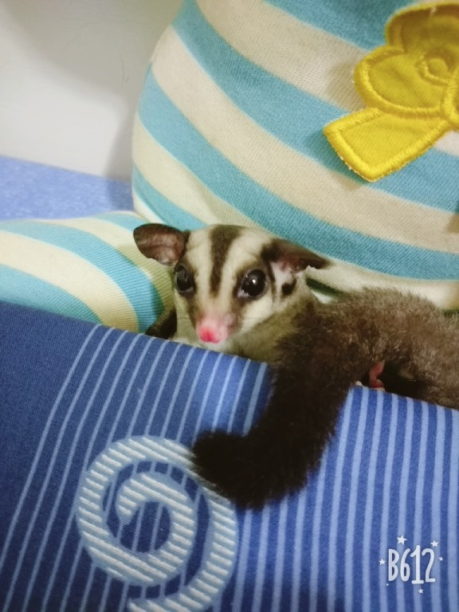
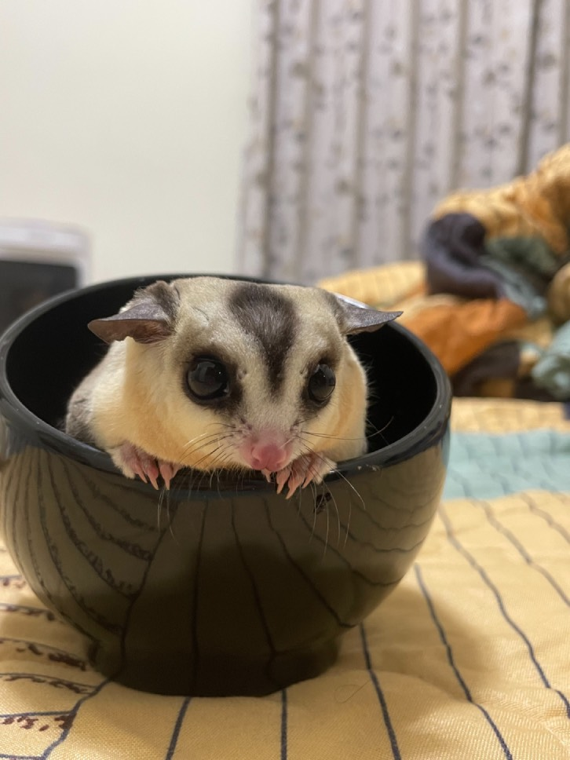
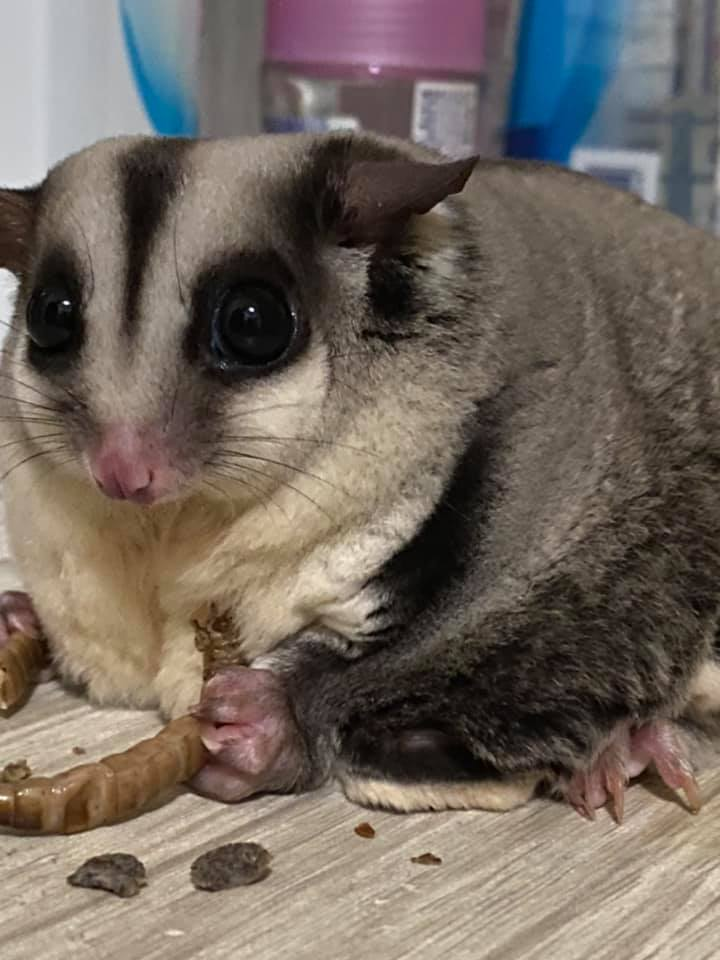

<<關於樂樂>>

左邊這隻是我家養的第一隻寵物，她的品種是蜜袋鼯，名字叫樂樂，這張是他剛來我們家的樣子，當初會養她是因為媽媽怕我一個人晚上在家會太孤單沒人陪我，於是就買了一隻回家來，因為我家是小型公寓怕養狗或貓會太吵，所以才養蜜袋鼯，她陪了我們快2年的時光，卻在某一年的冬天突然過世，老實說我真的蠻難過的，原本想說可能之後都不會在養蜜袋鼯，結果沒想到我媽在樂樂過世之後又帶了兩隻小蜜袋鼯回來，可能我媽也受不了少了樂樂的感覺吧！
<<關於弟弟>>

右邊這隻是我媽在樂樂過世之後從高雄帶回來的，他是一個很膽小的男孩子，當初帶回來的時候還沒斷奶，所以每天我睡覺前還要喂他們喝奶，那時候要抓他起來，他還會一直跑不給我抓而且還會一直叫，但是當喝到奶時又會瞬間安靜，果然吃的還是最重要。弟弟身上最具特色的地方就是他的臉了，跟其他蜜袋鼯相比，弟弟的臉明顯白了許多，雖然在照片中看不太出來就是了。
<<關於妹妹>>

左邊這隻是跟弟弟一起來我們家的妹妹，她是一個小女生，當時帶回來的時候只有小拇指般的大小，現在呢…嗯，從照片就看得出來他過得還不錯吧，整隻直接放大了幾十倍，甚至現在還比弟弟大隻了，妹妹她非常的愛吃，有時候給他們吃零食，她吃完還會去搶弟弟的來吃，所以你就知道她為什麼這麼胖了吧，她現在已經胖到快跳不動，或許我真的要來給妹妹減肥了。